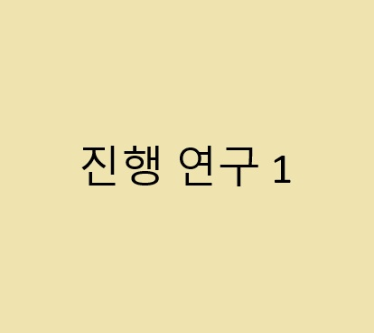
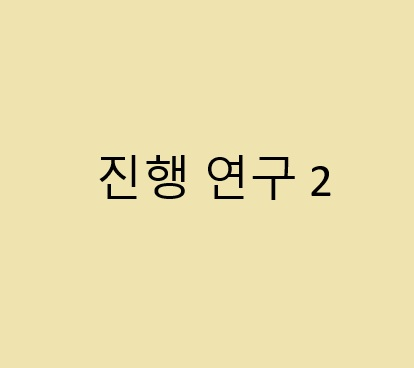

진행중인 연구 A: [연구 A의 전체 제목]

이곳에 '진행중인 연구 A'에 대한 자세한 설명을 작성합니다. 연구 배경, 목표, 현재 진행 상황 등을 서술할 수 있습니다.
관련 논문이나 프로젝트 링크를 추가할 수도 있습니다.
진행중인 연구 B: [연구 B의 전체 제목]

이곳에 '진행중인 연구 B'에 대한 자세한 설명을 작성합니다.
진행중인 연구 C: [연구 C의 전체 제목]
이곳에 '진행중인 연구 C'에 대한 자세한 설명을 작성합니다.
완료한 연구
- 회전하는 블레이드 주위의 유동가시화 및 전산유동해석
- 덕트형상에 따른 동축반전 로터블레이드 주위의 전산유동해석
- 틸트각 변화에 따른 틸트로터 항공기 주위의 유동해석
- Numerical simulation of laminar forced convection heat transfer of Al2O3-water nanofluid in a pipe with return bend
- 열사이펀의 형상비와 충전율에 따른 열전달 성능 해석
- Effects of mass transfer time relaxation parameters on condensation in a thermosyphon
- 진동형 히트 파이프에서 튜브의 지름과 개수에 따른 전산 열유동해석
- 공개 소스코드를 이용한 진동형 히트파이프에 대한 수치해석
- Numerical simulation of oscillatory flow and heat transfer in pulsating heat pipes with multi-turns using OpenFOAM
- 다양한 매개변수에 따른 관내 나노유체의 성능지수
- 개방형 구조의 진동형 히트파이프의 응축부 길이에 따른 추력 및 유동 가시화
- 전산 해석에서 압축성 작동유체의 상변화와 고체 벽 영역이 진동형 히트파이프에 미치는 영향